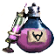

Бычье любовное зелье
Предметы / С заданий
Открыть в интерактивной вики →
| Вес | 60 |
|---|---|
| Цена | 5 000 |
Описание
Эликсир, который, как говорят, заставит Болтуна позаботиться о коровах и зачать молодых телят. Создает  Рэни. Требуется для одного из вариантов выполнения
Рэни. Требуется для одного из вариантов выполнения ")
Рэни. Требуется для одного из вариантов выполнения | Эликсир, после которого Болтун, говорят, займётся коровами и они принесут телят. |
Применение
|
Как добыть
| Во время активного Ежедневное задание Бычок Стаськи, можно изготовить эликсир у Рени за 50 000 золота. Для этого нужно:
 |